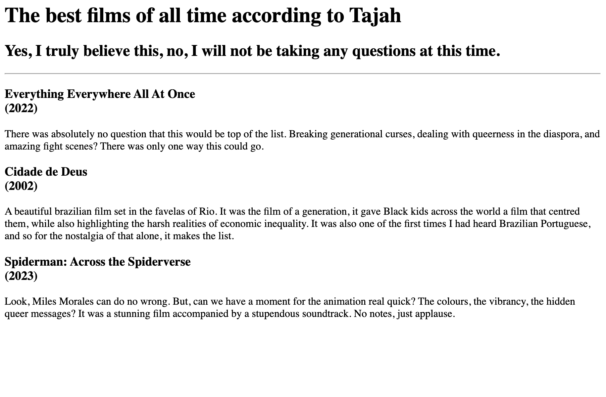
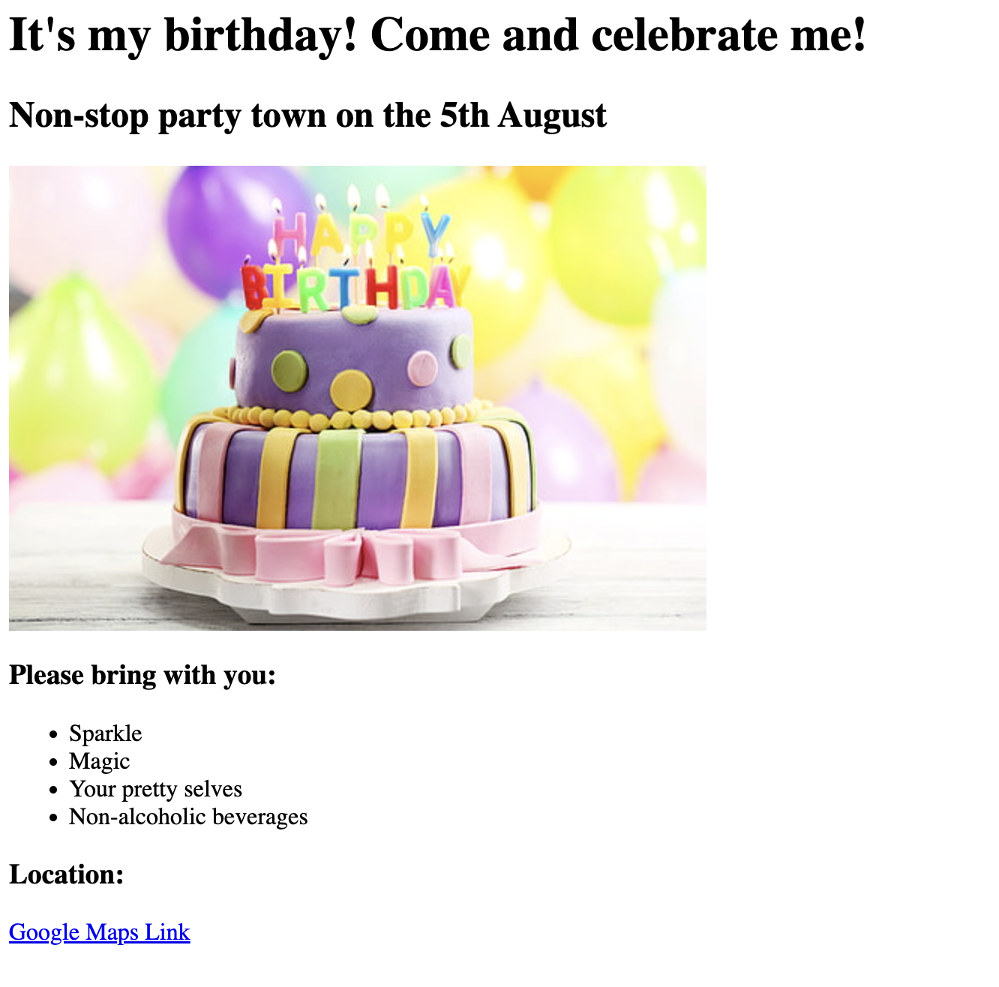

Tajah's HTML projects
That's right, add "Web Developer" to my long list of skills.
Using the Udemy Web Development course 2023, I have already created a number of HTML based projects.
They are listed below, with active hyperlinks that take you to the projects embedded in pictures. See for yourself how much I've learnt!
Project 1 - Movie Ranking Project

Project 2 Birthday Invite Project

If you like my projects and want to connect, contact me below or text me a 'Yeehaw!"
Contact page
Learn more about the web developer here